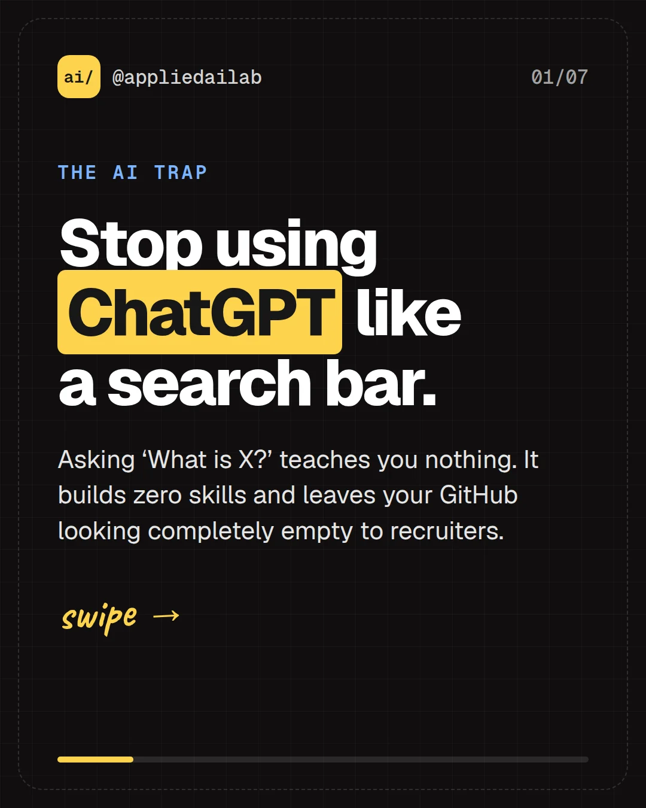
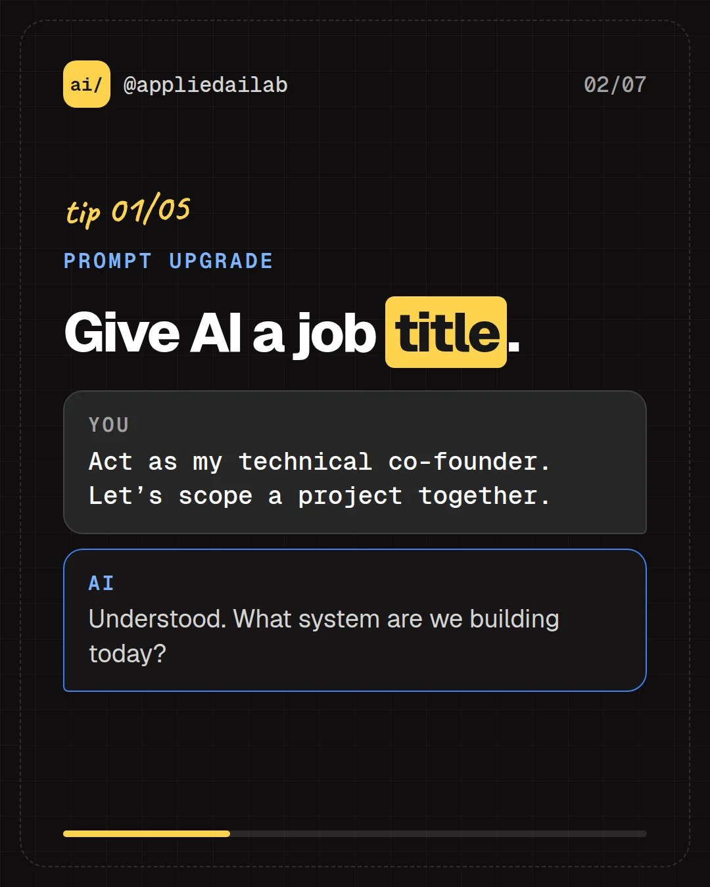
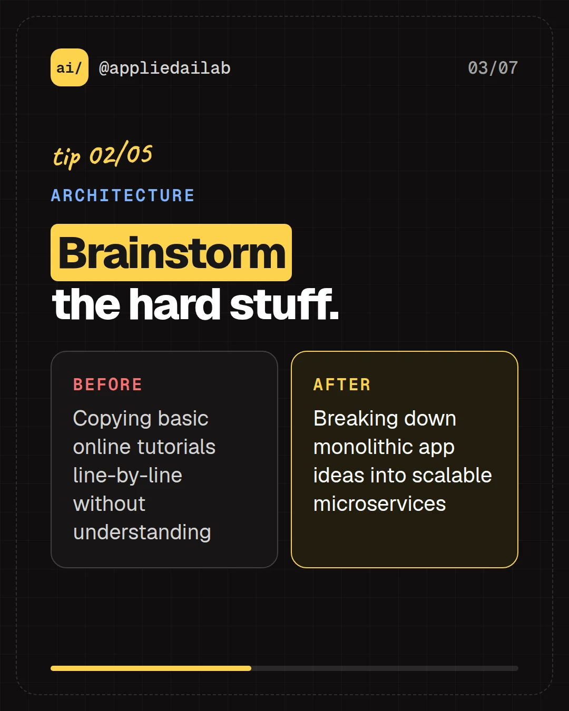
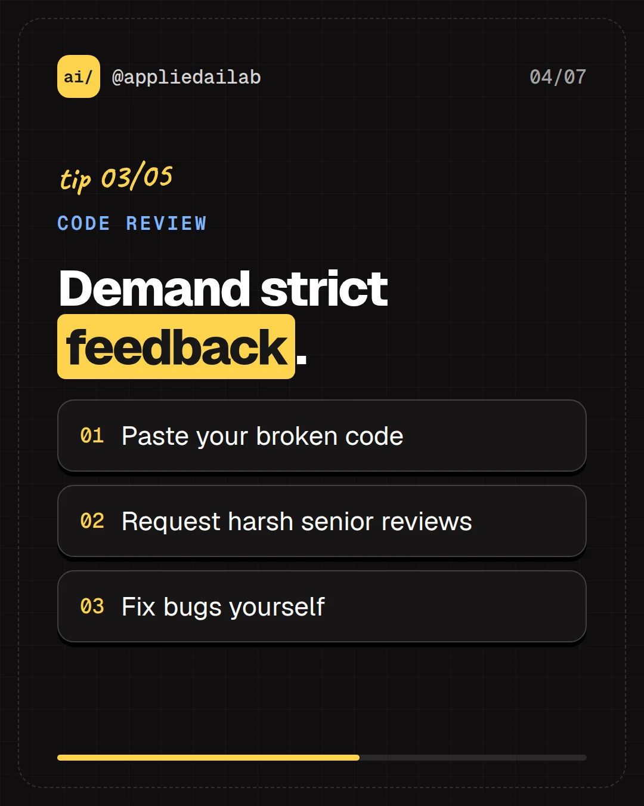
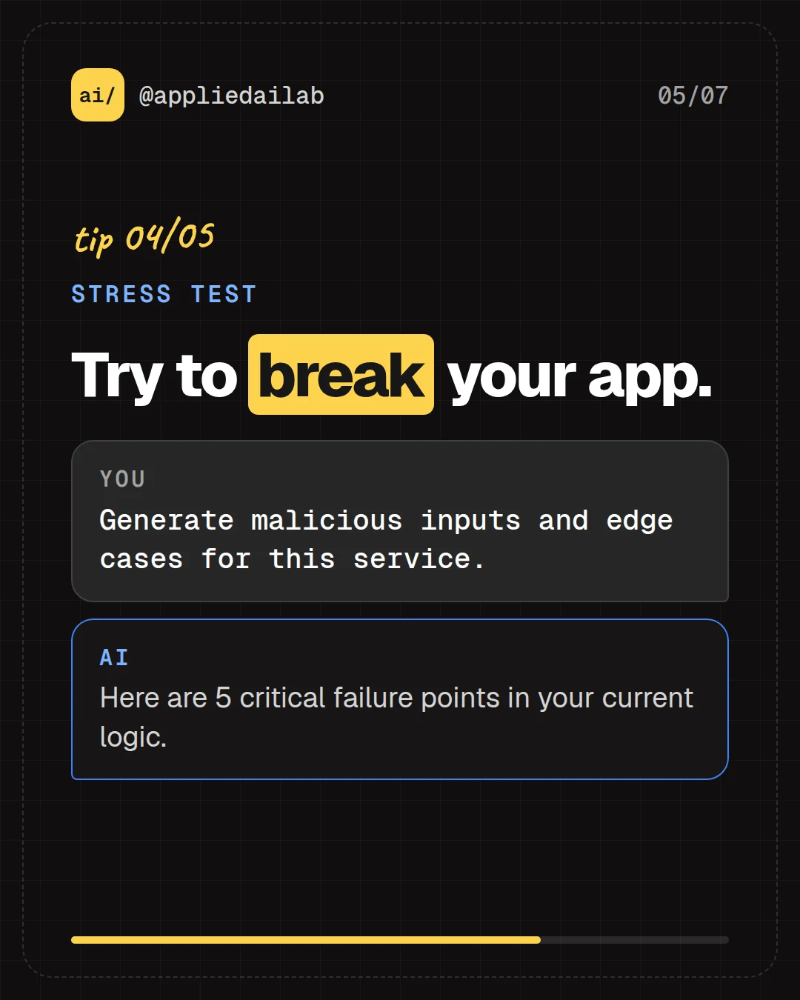
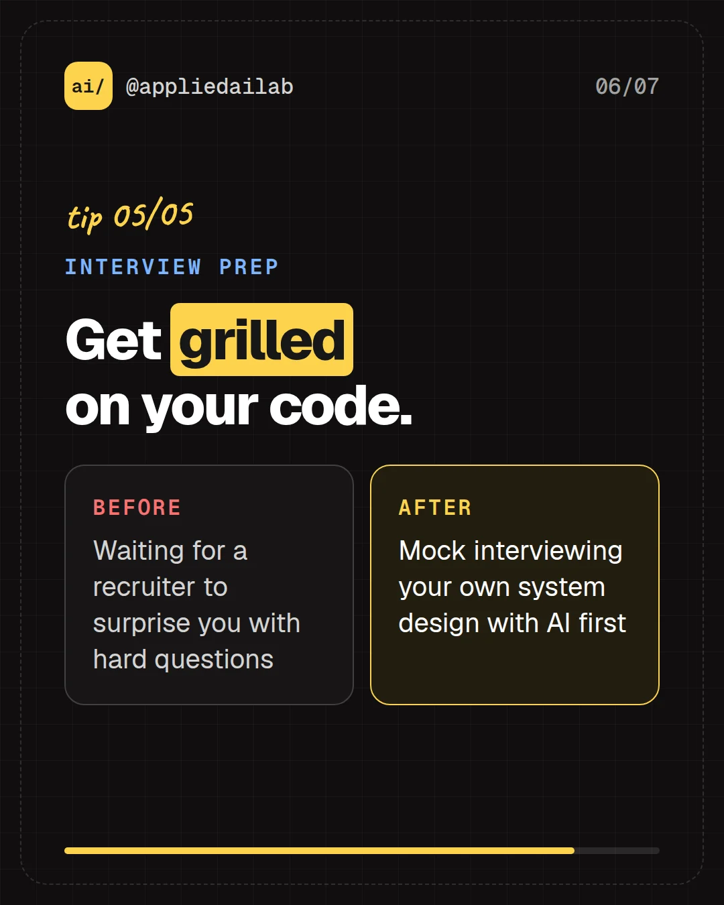
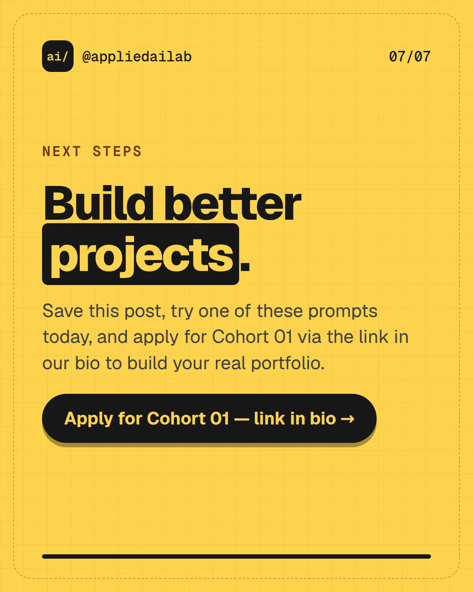

Three rough ideas, turned into
things you can click.
I built working prototypes instead of static mockups. Both pages run on real search, filters and forms, and the carousel came out of a pipeline I wrote and ran. Every link below is live.
↳ everything is responsive, so try it on your phone too
PawCare: Practo for Animals
Home and search with 7 categories, 8 filters, map preview, booking, listing and corrections.
pc 02 · LandingApplied AI Lab
Course landing with track switcher, 3-step application, partial-lead capture and enquiry.
ai/ 03 · AI systemIdea → Carousel pipeline
A Python pipeline with 5 stages. It produced the 7-slide carousel below in about 40s for ₹0.
→PawCare: animal-care discovery MVP
Essential MVP elements
- Intent-first search by need ("vaccination", "X-ray") or by provider, plus location
- 7 categories: clinics, 24×7 hospitals, boarding, diagnostics, ambulance, NGOs
- Emergency strip pinned above the fold, since a panicked owner shouldn't have to search
- Comparable result cards showing fee, open status, distance, rating, species and next slot
- Provider detail with services, languages, vets on staff and a "last verified" date
- A slot request that needs no account. The owner gets a WhatsApp confirmation
Filters & provider info
- Availability: open now, 24×7, home visit/pickup, verified only
- Pet type: dog, cat, bird, exotic, cattle, stray. Exotic-pet owners struggle most to find care
- Distance and max fee sliders, min rating, and sort by best match, nearest, rating or fee
- Filters live in the URL, so any search can be shared as a link (handy on WhatsApp)
- "Best match" ranks open listings first, then verified ones, then rating × log(reviews)
CTA strategy
| CTA | Who | Where & why |
|---|---|---|
| Find a Vet | Pet parent | Primary hero button and nav. Most visits come with one job to do |
| 🚑 Emergency | Pet parent / rescuer | Always in the nav, a pulsing strip on home and an SOS button in the mobile bottom bar. It goes straight to results sorted by distance |
| Explore Services | Browsing owner | Category grid and chips. Lets people discover boarding or diagnostics they didn't know were listed |
| Book / Call / Dispatch / Contact | Pet parent | The verb changes by category, so ambulances say "Dispatch" and NGOs say "Contact" |
| List Your Business | Provider | Shown in the nav, a "free listing" card on home, and the empty state ("can't find a provider?"). This is the supply side of the marketplace |
| Submit a Correction | Community | Placed on home, under results and in every detail sheet. With the "last verified" date, it keeps data trustworthy without a big ops team |
Attractive, intuitive & mobile-first
The pages are calm and neutral with one yellow accent, so medical information never looks like an ad. Emoji category icons load instantly and suit a warm brand. On phones, filters move into a bottom sheet, the map opens as a full-screen layer, and a thumb-reach bar holds Filters · Map · SOS. Tap targets are at least 38px, there's a dark mode, and motion respects reduced-motion settings. Search state is held in the URL, so the back button behaves as people expect.
Production path: Next.js + Supabase (Postgres + PostGIS for "near me"), Google Places for seeding, WhatsApp Business API for booking confirmations, and an admin queue for listings and corrections. Provider data in the prototype is clearly labelled as fictional sample data.
Applied AI Lab: course landing page
Page structure
- Hero: the "Stop watching tutorials, start shipping" promise, Apply and Talk-to-counsellor buttons, and an animated terminal showing the outcome
- Key facts: format, duration, batch size and prerequisites, which answers the first four objections
- Why us: build-first, portfolio-first, tool-agnostic
- Track picker: Creators, Builders and Work/Ops. Picking a track rewrites the curriculum below it
- Six-week curriculum with one shipped output per week
- Outcomes: 3 projects, 1 live automation, a verifiable certificate and community
- Pricing in INR (3 tiers, middle one anchored), EMI, student discount and refund policy
- Honest FAQ (for example, "we don't promise placements"), then a final CTA
Value proposition
For students and young professionals who are "learning AI" but can't show anything for it: six weeks, six shipped things, and a portfolio a recruiter can open. The pitch is about outcomes. The tools are just how you get there.
CTAs by intent
- High intent: Apply now. It shows in the nav, hero, pricing, the final CTA and a sticky mobile bar
- Medium: Talk to a counsellor (callback) or WhatsApp us
- Low: Get the syllabus PDF. A lead magnet that only asks for a phone number
Registration & lead-capture journey
In the prototype, the 3-step form validates input (Indian mobile regex, email) and writes aal_partial_leads, aal_applications and aal_enquiries to localStorage, with UTM tags attached. It is not connected to a real backend.
AI content system: idea → carousel
The founder types one sentence. A few seconds later there's a researched, on-brand, editable carousel plus LinkedIn and Instagram captions. A designer is only needed for the brand template, once.
One line typed into Telegram, Notion form, or Google Sheet
Target pain points, angles, 6 key takeaways, citations check
3 hook variants, 7 slides with char limits, 2 platform captions
Selects layout per slide from brand set with variety guardrails
1080×1350 PNG slides & PDF compilation with overflow checks
Founder tweaks copy in JSON/Canva, re-renders in ~30s for ₹0
Document PDF to LinkedIn, high-res carousel PNGs to Instagram
Sample Output: Real Pipeline Render
Idea: "5 ways to use AI like a junior teammate instead of Google search" · 10.5s run







Why it's built this way
- Strict JSON between stages. Each step's output can feed an n8n or Make node directly, with no prose parsing
- Brand rules live in code, not the prompt. The model picks from 6 layouts, and the code forces cover/CTA placement and stops repeated layouts. This is what keeps it from looking AI-generated
- Character limits + overflow detection. If a slide runs long, the renderer flags it instead of shipping clipped text
- JSON is the editable source. It works like a Figma file the founder can edit in any text box. A Google Sheet view is a 10-minute n8n add-on
- Cheap to iterate. Changing copy only re-renders and costs ₹0. Only a new idea calls the LLM
- Model-agnostic. Switching between Gemini, Claude and GPT is one env var (LLM_MODEL)
No-code version (n8n), if the founder prefers clicking to code
[Telegram trigger "/carousel <idea>"] → [HTTP: Perplexity — research JSON] → [Claude node — copy JSON (hooks, 7 slides, captions)] → [Code node — layout guardrails] → [Canva Connect API — autofill Brand Template (Bulk Create)] ← editable in Canva → [Telegram: send preview + "Approve / Edit"] → on Approve → [Buffer/LinkedIn: schedule PDF + caption]
Recommended tools & stack
| Layer | Pick | Why |
|---|---|---|
| Prototyping | Hand-written HTML/CSS/JS (these pages) → Lovable / v0 for speed | Real interactions to test with users on day one, with no lock-in |
| Production web | Next.js + Tailwind on Vercel | SEO for "vet near me" pages, plus a big hiring pool |
| Data / auth | Supabase (Postgres + PostGIS, Auth, Storage) | Geo queries, row-level security and a generous free tier |
| Design | Figma (system) + Canva Brand Templates (content) | Figma for the product. Canva so non-designers can stay on-brand |
| LLMs | Claude (writing), Gemini Flash (fast/cheap), Perplexity (research) | Pick per task. Swappable through one API layer |
| Automation | n8n (self-host) or Make | Visual workflows the founder can read and edit |
| Messaging | WhatsApp Business API (WATI/Interakt), Resend for email | Indian users answer WhatsApp, not email |
| Payments / analytics | Razorpay · PostHog | UPI and EMI, plus funnel and drop-off tracking for the application form |
What I'd do in week one
- Seed 200 real Bengaluru providers from Google Places, then call-verify the top 50
- Deploy the course page with live forms, plus n8n → WhatsApp and Sheets
- Put the carousel pipeline behind a Telegram bot so you can create posts from your phone